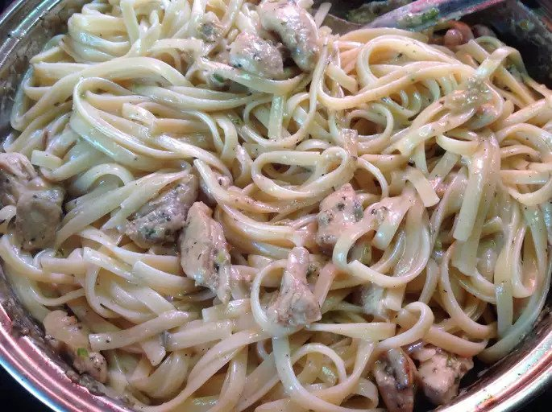

<!DOCTYPE html>
<html lang="en"></html>

    <head>
        <meta charset="UTF-8">
    </head>

    <body>
        
        <h2>Description</h2>
        <p>Simple Alfredo chicken recipe. Chicken breast and fettucini pasta in a creamy cheesy sauce containing cream, parmesan and riccota cheese.</p>

        <h2>Ingredients</h2>
        <ul>
            <li>1 pound fettuccini pasta</li>

            <li>1.5 cups butter, divided</li>

            <li>1 pound skinless, boneless chicken breast halves - cut into cubes</li>

            <li>2 (16 ounce) containers whole milk ricotta cheese</li>

            <li>1 pint heavy cream </li>

            <li>1 teaspoon salt</li>

            <li>1 cup grated Parmesan cheese</li>
        </ul>
        
        <h2>Steps</h2>
        <ol>
            <li>Bring a large pot of lightly salted water to a boil. Add fettuccini and cook for 8 to 10 minutes or until al dente; drain.</li>

            <li>Melt 2 tablespoons butter in a large skillet over medium heat. Saute chicken until no longer pink and juices run clear.</li>

            <li>In a large saucepan combine ricotta cheese, cream, salt, Parmesan cheese and remaining butter. Cook over medium heat until well combined, about 10 minutes. Stir in cooked fettuccini and chicken; cook until heated through.</li>
        </ol>

    </body>

</html>